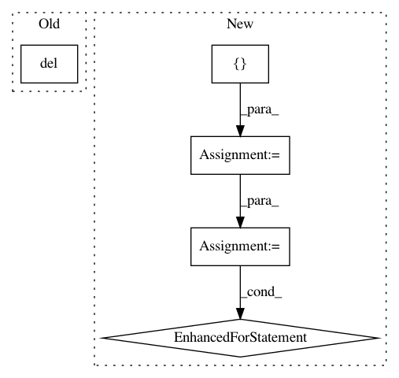

59ca2fde6950e736520e40461c24bba9e13adaa9,lib/tests/streamlit/watcher/LocalSourcesWatcher_test.py,LocalSourcesWatcherTest,setUp,#LocalSourcesWatcherTest#,46
Before Change
class LocalSourcesWatcherTest(unittest.TestCase):
def setUp(self):
try:
del sys.modules[DUMMY_MODULE_1.__name__]
except:
pass
try:
After Change
class LocalSourcesWatcherTest(unittest.TestCase):
def setUp(self):
modules = [
"DUMMY_MODULE_1", "DUMMY_MODULE_2", "MISBEHAVED_MODULE",
]
the_globals = globals()
for name in modules:
try:
del sys.modules[the_globals[name].__name__]
except:
pass
try:
del sys.modules[name]
except:
pass
@patch("streamlit.watcher.LocalSourcesWatcher.FileWatcher")
def test_just_script(self, fob):
lso = LocalSourcesWatcher.LocalSourcesWatcher(REPORT, CALLBACK)
In pattern: SUPERPATTERN
Frequency: 4
Non-data size: 5
Instances
Project Name: streamlit/streamlit
Commit Name: 59ca2fde6950e736520e40461c24bba9e13adaa9
Time: 2019-06-21
Author: thiago@streamlit.io
File Name: lib/tests/streamlit/watcher/LocalSourcesWatcher_test.py
Class Name: LocalSourcesWatcherTest
Method Name: setUp
Project Name: streamlit/streamlit
Commit Name: 0f65b0232077bf3f00fa4405d7412094dfd2a33a
Time: 2019-07-02
Author: thiago@streamlit.io
File Name: lib/tests/streamlit/watcher/LocalSourcesWatcher_test.py
Class Name: LocalSourcesWatcherTest
Method Name: setUp
Project Name: OpenNMT/OpenNMT-py
Commit Name: d314a48ed4a95926aece62f554cecb4544b5acd5
Time: 2019-11-12
Author: pltrdy@gmail.com
File Name: onmt/models/model_saver.py
Class Name: ModelSaverBase
Method Name: save
Project Name: OpenNMT/OpenNMT-py
Commit Name: d314a48ed4a95926aece62f554cecb4544b5acd5
Time: 2019-11-12
Author: pltrdy@gmail.com
File Name: onmt/trainer.py
Class Name: Trainer
Method Name: validate